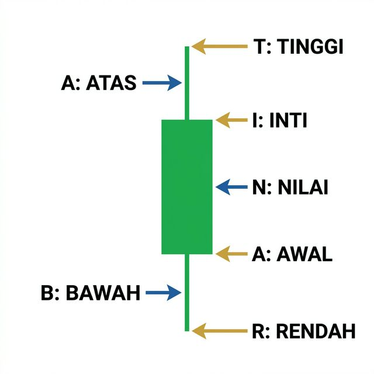

Versi Bahasa Indonesia — Mnemonic Lengkap untuk Memahami Anatomi Bidak dalam Trading secara Profesional.
Kembali ke Beranda
Visualisasi Mnemonic TABRANI: Tinggi, Atas, Bawah, Rendah, Awal, Nilai, dan Inti.
Harga tertinggi (High) yang dicapai sesi perdagangan.
Ekor atas.
Ekor bawah.
Harga terendah (Low) yang dicapai sesi perdagangan.
Harga pembukaan (Open).
Badan bidak.
Harga Penutupan (Close) + harga saat ini (fluktuasi setiap detik).
| Huruf | Arti | Penjelasan Lengkap (Candlestick) | Arti Praktis di Chart |
|---|---|---|---|
| T | Tinggi | Harga tertinggi (High) | Puncak atas candle |
| A | Atas | Shadow/ekor atas (Upper Wick) | Tekanan jual di atas |
| B | Bawah | Shadow/ekor bawah (Lower Wick) | Tekanan beli di bawah |
| R | Rendah | Harga terendah (Low) | Dasar candle |
| A | Awal | Harga pembukaan (Open) | Titik start sesi |
| N | Nilai | Body / Tubuh lilin (Real Body) | Kekuatan nyata buyer/seller |
| I | Inti | Harga Penutupan (Close) | Nilai akhir sesi |